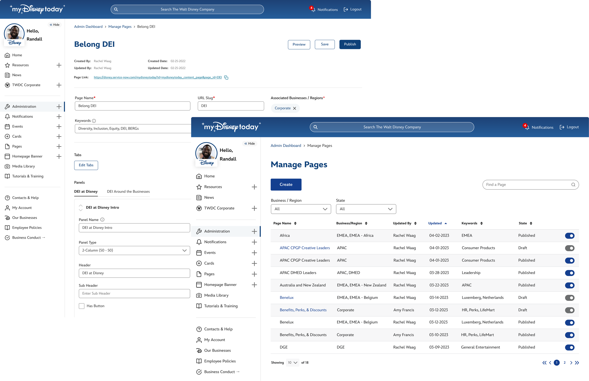
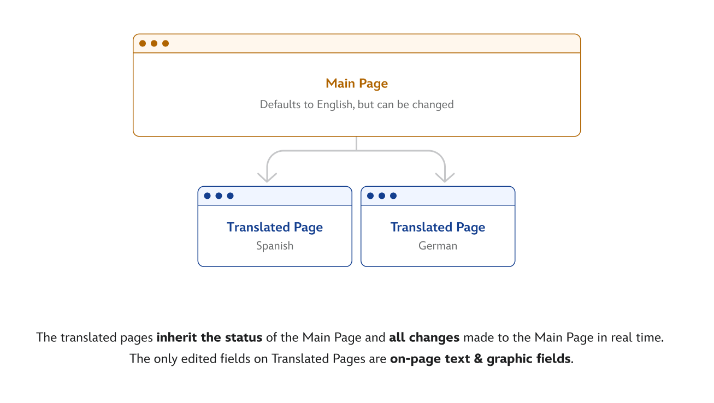
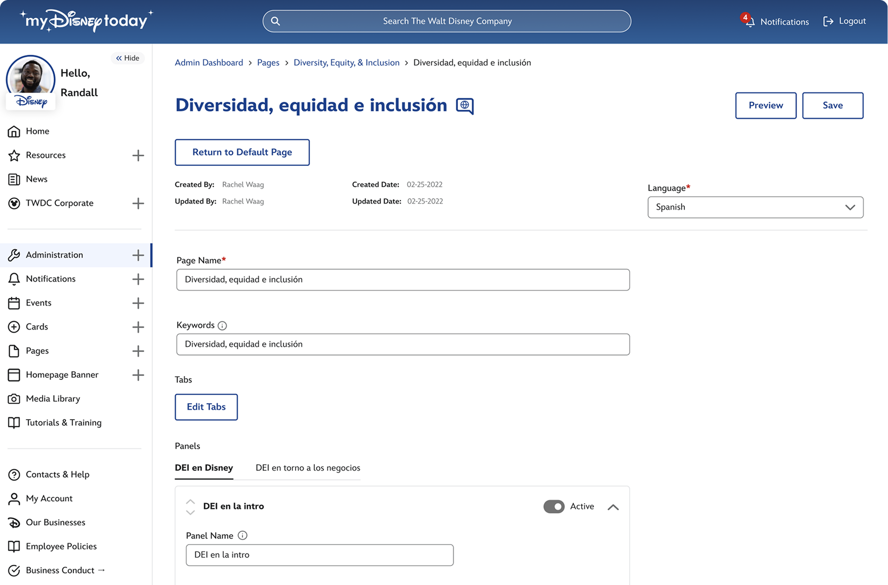
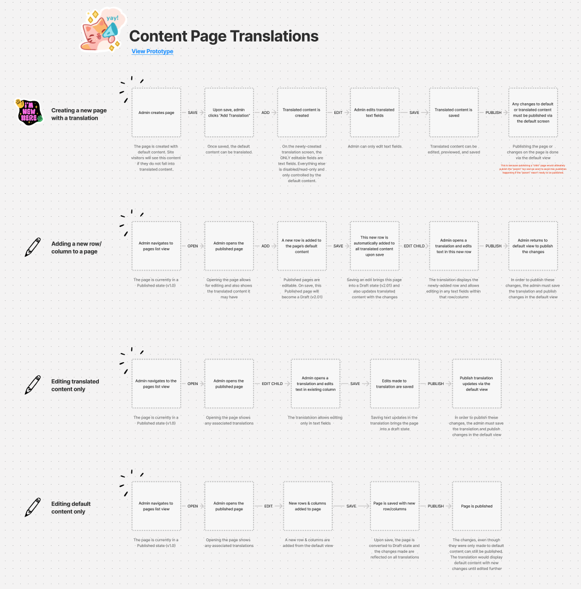
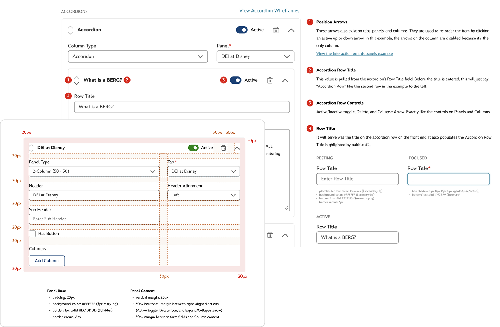
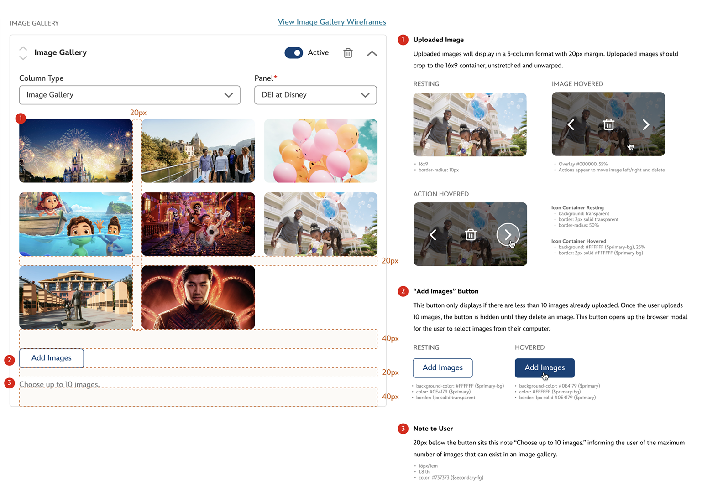

Content Page Admin Console
Overview
MyDisneyToday thrives on business collaboration and content presented to employees across all regions. Content pages were similar to a WordPress CMS-like experience. I designed them specfically for our needs as a company and as brand managers. In the early months following launch, our product team took the lead building and updating content pages which pulled us away from our core responsibilities. These were tasks we always intended to empower our partners to manage themselves. Since the initial launch focused on delivering the MVP, the content page admin quickly followed. This is an overview of that console and how it supports self-service and scalability.
Without a Content Page Admin
The biggest setbacks faced without the page admin were:
- Dependency on the product team (us) - The product team was managing business configurations and updates instead of focusing on their core work.
- Lack of self-service tools for business users - Business teams couldn’t independently manage their content or settings, creating dependency on the product team.
- Time diverted from product priorities - Supporting configuration needs pulled time and focus away from critical product development tasks.
- Lack of empowerment for business partners - The needs of unique brands across Disney are rightfully high. But meeting all of the for everybody with just one small team was not productive and required a solution.
- Little sense of ownership for businesses - Everything published on a content page was derived straight from the businesses themselves. It was important to make it feel that way and give each business ownership over their content.
Opportunities
Opportunities we could provide by releasing a fully-functional page admin were:
- Reduce product team overhead - Shifting page ownership to business managers frees up the product team to focus on core innovation.
- Accelerate content deployment - Insteading over going through a multi-level process to build and release page updates, businesses could edit and publish immediately if desired.
- Empower business partners - Providing the right tools allows partners to manage their own content, increasing agility.
- Introduce scalable self-service - A self-service model reduces operational friction and scales better with growing business needs.
- Invest in purpose-built admin tools - Building dedicated tooling supports long-term efficiency and reduces reliance on workaround platforms.
Research & Discovery
Business Needs
Because MyDisneyToday delivers a tailored experience for employees across various businesses and regions, it was essential to provide our brands with the flexibility to curate their own content. This included the ability to customize pages they own to better serve the needs of their employees or internal promotions.
- Previewability - The native console of page editing didn't offer an opportunity to view edits while admins worked. It wasn't until a page was published that an admin could even see what they had done. We needed a change to preview pages prior to publishing in this model.
- Page drafts - Drafts could sit after save until businesses were ready to pubslih them. This way, they can confidently publish when they are truly ready.
- On-page uploads - In the native console, image uploads happened in a completely different area of the system. In the new console, we needed to be able to upload and use images without leaving the editing page.
- Bulk uploads - Instead of using the Media Library (another part of the front-end MDT admin), admins wanted to upload all their files while editing. Introducing a bulk upload feature would allow them to do this easily. Sometimes users pave their own path and, as designers, we need to accomodate them.
- Targeting - Pages needed to be targeted not only so that businesses and regions could see them, but also departments, orgnizations, and job levels.
- Compact editing - This console needed a complete sitemap refersh from the current native workflow. Instead of being segregated to multiple pages and sections, this new console required compact, single-page editing.
Current (Native) Workflow
The native sitemap was completely linear with no hierarchy. Every action was a new page and it felt very disconnected. Wayfinding was also a major issue with this structure.
Proposed Workflow
The proposed hierarchy was simple - all actions were on the same page and available through progressive reveal based on back-end logic. Accoerdion show/hide functionality and modals offered the opportunity to keepo everything in one place.
Creating the Experience
We have third-party developers as part of the MDT product team. I worked with them to transform the (absolutely awful) native ServiceNow experience into one that was usable and required very little training. These are the implementations designed and developed to invite business collaboration.
Building a Page
The first page you'd see entering the admin console is a list of business entity configurations. This name carried over from legacy development but refers to each targets business experience. For security, it's critical that businesses only work on configurations that they own - introducing permissions. Showing and hiding features depending on user levels allowed us to simplify the list view and get content managers where they needed to go as quickly as possible.
List View
The first page admins see entering when going to edit a page is a list of pages and their associated businesses. For security, it's critical that businesses only work on pages that they own so we introduced automatic filtering and permissions based on their assigned business. Showing and hiding features depending on user levels allowed us to simplify the list view and get content managers where they needed to go as quickly as possible.
Requirements
- Automatic filtering - By pulling from employee HR information, we could filter the page on entry depending on an admins position in the company.
- Apparent page name - Admins relied on the name of the page to navigate to them. We needed this to be right-aligned and apprent so they were not searching for it.
- Chronological ordering - To make it easier and quicker for admins to navigate, the default ordering of the list view would display the most recent page to be edited first.
- Page state - Drafts and pubslished page states were beneficial to see right on entry into the console.
Page Details
When a page is initially created, the business should be pulled automatically through employee data. The admin needs to then define a page name and URL slug in order to save the initial draft.
Requirements
- Page name - Required field that appears at the top and in the breadcrumbs of a published page.
- URL slug - This follows the main 'mydisneytoday' URL and sits at the end of the page's link.
- Automatic association - The create page should automatically associate the business the admin is assigned to.
- Targeting - Not required, but targteing could be added at this stage if needed.
- Keywords - Not required, but keywords could be added at this stage if needed. Keywords were used in MyDisneyToday searches to promote pages.
Adding Tabs
Pages could use tabs as a secondary form of navigation. When pages and microsites weren't too coplex, this would be a good way to group content without having to build multiple pages.
Requirements
- On-page editing - Tabs needed to be editable from the page directly without having to navigate admins away from the page.
- Tab visualization - My favorite part of the tabs was creating a way for admins to edit them as they appear on the page - as tabs! As admins added tabs, they would display in order on the editing page. Navigating between them would allow tab-specific editing.
- Targeting - Tabs also needed to be targetable in the case a business needs to hide an entire tab from a group of employees.
- Link information - After organizaing the main menus, links required fields to define the link names, URLs, icons, and targeting.
Adding Panels
Page layout was pulled from "panels" - these housed type of columns seen below. This, as well as columns, is where a majority of editing time is spent.
Requirements
- Panel name - Striclty for ease of navigating the page admin. This panel name would not appear on the front-end.
- Panel type - This could be 1 column to 6 columns. It was rare to see anything above four columns being used.
- Tab - This would automatically be set to the tab in which the panel was created under. However, this field offered a chance for admins to move panels between tabs if they needed.
- Header - This would be shown on the page above a panel's content. It could be left, right, or cetner-aligned.
- Adding a button - If the panel required action, there was an option to add a button centered beneath the panel.
Adding Columns
While a panel setup the layout of a column, the actual content was pulled in through columns. These columns housed content such as images, videos, carousels, accordions, and more.
🎬 Create a Column | Accordions | Forms | Images | Image Galleries | Text
Requirements
- Column type selection - Offer the ability to choose the type of column from images to galleries to just plain text.
- Panel selection - This would auto-populate with the panel in which the column was created within. However, it could be changed if an admin wanted to move a column to another panel.
- Accordion column type - Ability to add content with columns to create the hierarchy of an accordion.
- Image column type - This includes the image shape (square, rectangle, circle, or banner), image upload and preview, header to display below image, and a link field if the image and header needs to link somewhere.
- Image Gallery column type - Ability to bulk add images, order them, and remove them from the gallery.
Translating Pages
Translating pages was another obstacle that could easily get out of control. It took a few iterations to land on the most seamless solution.
  Collaborating with Developers
With a development background, I enjoy bridging the design-development gap. I try to afford the developers with as much as I can to help them and expedite development.
 Delivered!
The MDT Content Page Admin Console was not just another tool—it was a defining moment for MyDisneyToday. After many
thoughtful sprints and rounds of collaboration, we delivered a scalable, business-friendly interface that liberated our
teams from dependency on the core product group. With the new console, business partners now own their content and can
publish instantly—improving agility, reducing bottlenecks, and driving stronger engagement across regions. Plus, being
the first feature built using the MyDisney design system, it set the standard for consistency and speed in all future
development. In short, the admin console didn’t just add value—it reshaped how we work.
Fun Fact: It was also the first place the MyDisney design system was implemented!
✨ Explore more of MyDisneyToday ✨
⬅ Back to MyDisneyTodayBEC Admin Console
Employee Profile Experience
MDT + AI Assistant